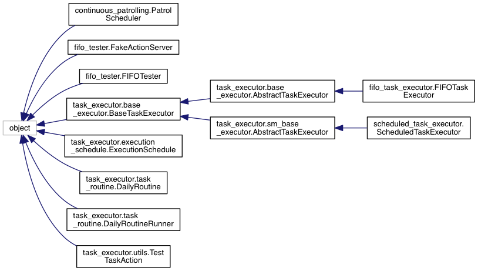
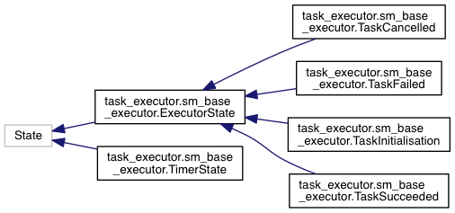
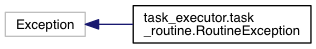

Main Page
Namespaces
Classes
Files
Class List
Class Hierarchy
Class Members
Class Hierarchy
Go to the textual class hierarchy



task_executor
Author(s): Nick Hawes
autogenerated on Tue Mar 17 2015 20:08:13